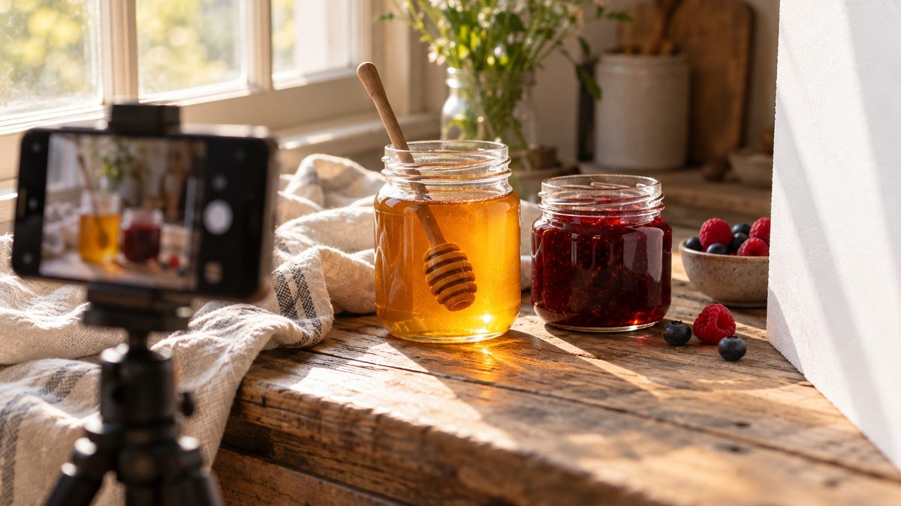

Como fotografar geleia e mel para vender online

Quem compra pela internet não pega o pote na mão. Decide pela foto. Pra geleia e mel em vidro, a foto tem uma vantagem: a cor do conteúdo aparece. E um desafio: o vidro reflete tudo ao redor. A boa notícia é que dá pra resolver os dois com um celular, uma janela e algumas cartolinas.
O que a foto precisa fazer
O Blog da Shopee, num texto sobre fotografia de produto, resume o que pesa mais: iluminação, enquadramento, padronização e fidelidade ao produto real. Nenhum desses itens exige equipamento profissional. Pra um pote de vidro, o recado é parecido: a foto precisa mostrar o conteúdo, o formato e a tampa sem criar dúvida.
Use luz de janela
A luz do dia reproduz bem as cores e é grátis. O guia de fotografia com luz natural da Shopify sugere montar o cenário a poucos metros de uma janela grande e evitar o meio-dia, que costuma gerar sombras duras. As melhores horas são o começo da manhã e o fim da tarde.
Se a luz estiver forte demais, uma folha branca fina na frente da janela suaviza. Do lado oposto, um refletor (cartolina branca ou uma prancha de isopor) devolve luz pro lado escuro do pote.
Controle o reflexo do vidro
Vidro reflete a janela, a sua roupa, a câmera. Algumas formas de controlar:
- Evite flash direto. O flash direto cria muitos reflexos indesejados no vidro e sombras duras no fundo.
- Teste a luz por trás do pote, atravessando um fundo claro e translúcido, como papel vegetal ou uma folha branca fina. Esse contraluz limpa os reflexos, define a borda do vidro e faz a cor da geleia ou do mel brilhar.
- Mude o ângulo de leve. Um pequeno giro do pote ou da câmera costuma tirar um reflexo incômodo.
Escolha um fundo que não compita
O Blog da Shopee recomenda um fundo que não compita com o produto. Pra começar, uma mesa com papel branco ou uma parede lisa funciona, e papel kraft ou cartolina também resolvem. Fundo neutro dá clareza. Um cenário de uso, com pão, torrada ou uma colher, mostra contexto. O ideal é ter os dois tipos de foto.
Faça mais de uma foto
Uma única imagem raramente basta. Uma sequência simples cobre as dúvidas mais comuns:
- Foto principal: o pote fechado, de frente, centralizado.
- Lateral ou traseira: pra mostrar o outro lado, o rótulo e o formato.
- Close na tampa e no rótulo.
- Pote aberto, com o produto: a geleia numa colher, o mel escorrendo.
- Comparação de tamanho: o pote ao lado de uma mão ou de um objeto conhecido.
Antes de clicar
Detalhes pequenos aparecem muito numa foto de vidro:
- Limpe o pote com um pano macio pra tirar digitais e poeira.
- Deixe o rótulo reto e a tampa limpa.
- Mantenha a mesma distância, a mesma luz e o mesmo fundo em todas as fotos da loja. A padronização deixa o conjunto mais profissional e agiliza as próximas.
Seja fiel ao produto
Corrigir a luz é aceitável. Mudar a cor da geleia ou o tamanho do pote não é, e gera cliente decepcionado. O texto da Shopee é claro nesse ponto: a imagem não deve prometer o que o produto não entrega.
Cada plataforma tem as suas regras
Instagram, Shopee e outros marketplaces têm exigências próprias de formato e tamanho de imagem, e elas mudam. Antes de subir o catálogo, confira o guia da plataforma onde você vende.
Pra quem está começando a montar o catálogo, veja os potes da PodEmbalar ou fale com a gente pelo WhatsApp.